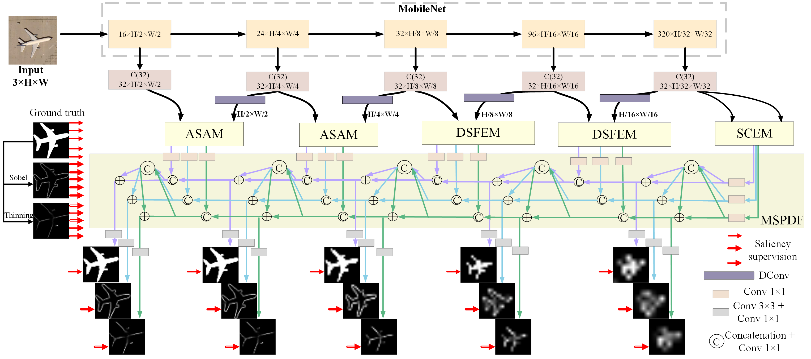
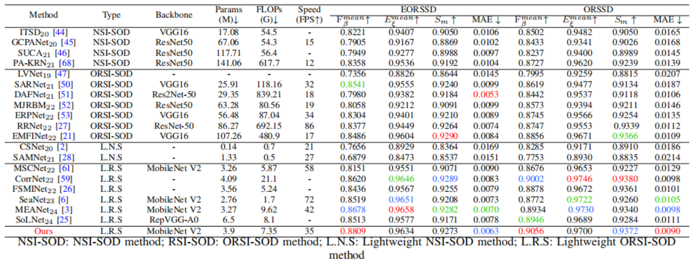
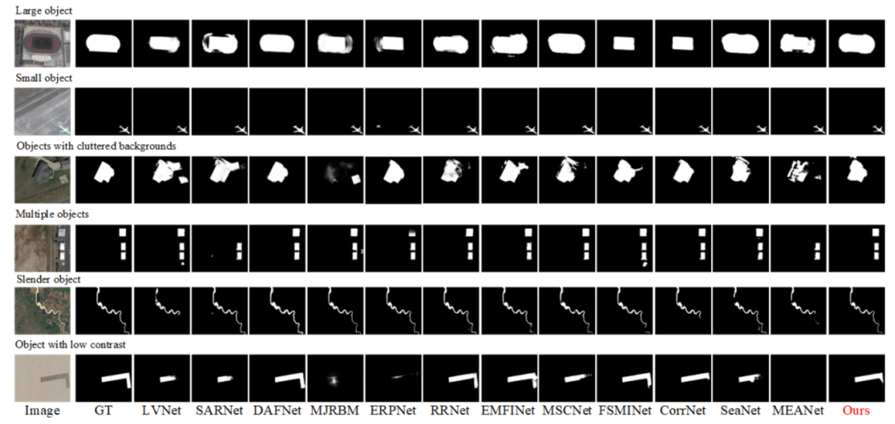
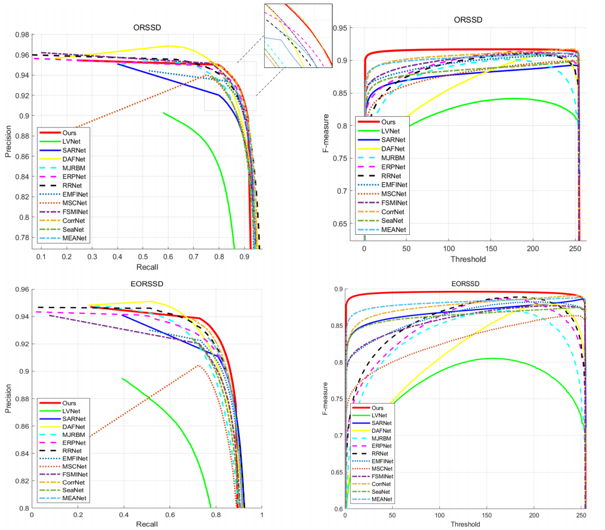

Framework Architecture

Figure 1: Overall architecture of LiteSalNet. The network follows an encoder-decoder structure based on MobileNetV2, featuring three specialized modules: Adaptive Spatial Attention Module (ASAM), Dual-Scale Feature Enhancement Module (DSFEM), and Semantic Context Enhancement Module (SCEM). These modules refine multi-scale features, which are further processed through the Multi-Stream Progressively Decoding Framework (MSPDF). The MSPDF employs three parallel decoding streams for saliency prediction, edge detection, and skeleton estimation, enabling accurate, boundary-aware, and structure-consistent saliency detection.
Quantitative Results

Table 1: Quantitative comparison with SOTA methods on ORSI datasets. Top scores are highlighted in red (best), blue (second), and green (third).
PR Curve

Figure 2: Visual comparisons with 12 state-of-the-art ORSI-SOD models on various challenging ORSI scenarios. Please zoom-in for better visualization.
PR Curve

Figure 3: PR curves (left column) and F-measure curves (right column) on the ORSSD and EORSSD datasets.